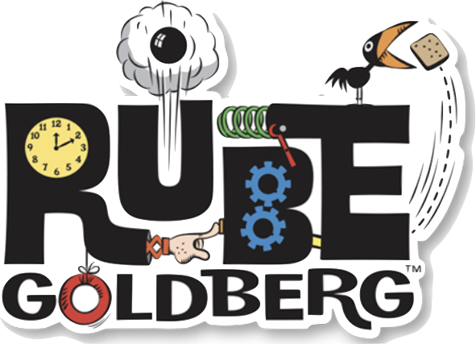
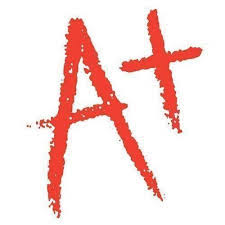

Rube Goldberg Club
MathnasiumI am a junior at Cornell University in the College of Engineering, studying Mechanical Engineering with a minor in Operations Research. For now I want to learn how to develop analytics driven software solutions to help optimize systems. Outside of school-work I work on managing my startup called Titan Analytics to help football teams streamline their data analytics needs. During the fall semesters I also play for the Varsity Cornell Sprint Football team as one of my passions. My hobbies outside academics and sports consist of entrepreneurship, cinematography and graphic design.